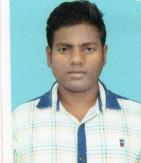

|  |
Bapi DhibarCivil Site Engineer at Umesh & Manik Construction Pvt.Ltd.
Vill+P.O.-Lakshminarayan Pur, Dist- Birbhum, Pin-731123, West Bengal, India |
To Work in an environment that challenges me to improve and constantly thrive for perfection all the task alloted to me.
| Dates | Works | Position |
|---|---|---|
| 2015-2020 | Umesh and Manik Construction Pvt.Ltd. | Civil Site Engineer |
| 2020-2021 | FN Construction Pvt.Ltd. | Assistant Surveyor |
| Course Name | Board | Passing Year |
|---|---|---|
| B.Tech in Civil Engineering | Maulana Abdul Kalam Azad Unibversity of Technology | 2015 |
| Higher Secondary(12th) | W.B.C.H.S.E | 2011 |
| Madhyamik Pariksha(10th) | W.B.B.S.E | 2009 |